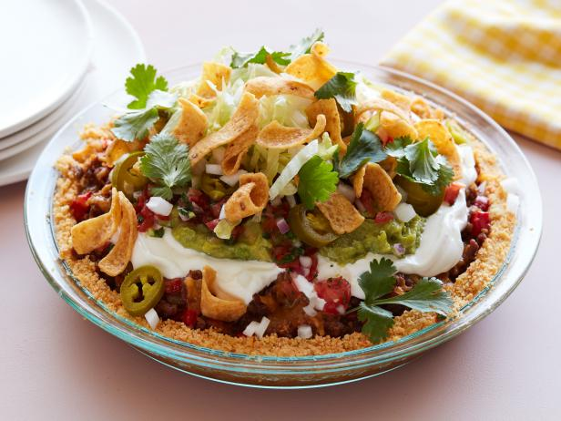
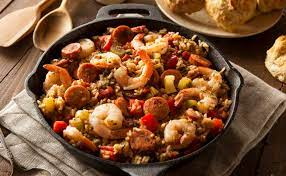
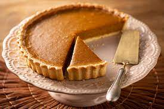

Fritos Pie
(Torta de Fritos)
Apesar do nome, a Fritos Pie não é exatamente uma torta. Essa receita popular no estado do Texas é uma mistura de salgadinhos industrializados de milho, cebola, alho, pimenta, molho do tomate, carne moída, feijão enlatado, orégano, cominho e queijo. A receita manda refogar a cebola, o alho e a carne, misturar os outros ingredientes e depois jogar tudo no saco de salgadinhos ou em uma tigela. O tempo de preparo é de mais de uma hora.
Meatloaf
(Bolo de carne)
Outro prato típico dos Estados Unidos que você já deve ter visto em algum filme é o bolo de carne. Como seu nome já diz, é um bolo de carne moída assado ou defumado, essa parte vai de acordo com a preferência dos comilões. Esse prato ficou famoso durante a Grande Depressão, quando as pessoas já não tinham muitas condições financeiras. Também pode ser servido acompanhado de molhos ou recheios.

Jambalaya
(Linguiça e camarões)
O jambalaya é um prato de mistura típico de Nova Orleans, semelhante à paella espanhola, mas que leva frango, linguiça calabresa e camarões. No refogado entram também tomate, pimentão, salsão e alho-poró, além do tempero cajun, pilar da cozinha da Louisiana, que mescla pimentas, ervas, páprica, estragão e canela. “Coloco cravos também, é o meu toque, e digo que quem encontrar um deles no prato terá uma conta bancária milionária", brinca a chef Aline Chermoula.
 Pumpkin pie
(Torta de abóbora)
Os americanos têm um apreço enorme por abóboras, tanto que as usam para a decoração do Halloween. Isso não poderia ser diferente na culinária. A torta de abóbora está presente, principalmente no dia de Ação de Graças e os seus ingredientes mais comuns são a abóbora, noz moscada, gengibre, canela e chantily. Curiosidade: as abóboras utilizadas no Halloween são reaproveitadas nas tortas, visto que o feriado de Ação de Graças ocorre após essa comemoração.
